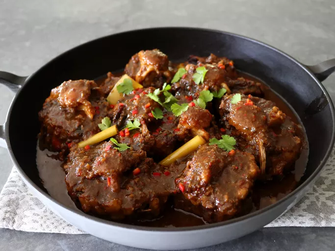

Home
Avocado Mango Salsa

Description
Chef John's coconut-based curry is an incredibly tasty, sumptuous dish that simmers for a long time, but is otherwise not difficult to prepare. Oxtail is without a doubt the most succulent meat on the cow, and this is one of the most delicious ways you can prepare it.
Ingredients
- 4 pounds oxtail, cut into 2-inch pieces
- 3 tablespoons vegetable oil, divided
Curry Base
- 4 shallots, peeled and sliced
- 6 cloves garlic, peeled
- 1 (2 inch) piece ginger root, thinly sliced
- 1 (2 inch) piece galangal root, thinly sliced
- 2 jalapeno peppers, sliced
- 2 Fresno chilies, sliced
Curry
- 4 teaspoons kosher salt
- 1 teaspoon ground coriander
- 1/2 teaspoon ground turmeric
- 1 tablespoon Korean red chili flakes, or other hot chili flakes
- 1/4 teaspoon ground nutmeg
- 1/4 teaspoon ground cardamom
- 1 (14 ounce) can coconut milk
- 1 tablespoon tamarind paste
- 3 tablespoons brown sugar
- 1 stalk lemongrass, bruised and cut into 2-inch pieces
- 2 cups beef broth
- 1 cup water, or as needed
- chopped fresh cilantro
- fresh lime wedges
Steps
- Preheat the oven to 450 degrees F (235 degrees F). Line a rimmed baking sheet with foil. Place oxtails on the pan and drizzle with 1 tablespoon oil; toss to coat and space out evenly.
- Roast in the preheated oven for 25 minutes.
- For curry base, add shallots, garlic, ginger, galangal, jalapenos, and Fresno chilies to a food processor and process until a fine paste forms.
- Heat remaining 2 tablespoons oil in a large Dutch oven over medium high heat. Add curry base, and cook, stirring occasionally, until mixture dries out and begins to toast onto the bottom of the pan, 4 to 5 minutes.
- Season with salt, coriander, turmeric, chili flakes, nutmeg, and cardamom and cook, stirring, for 1 minute more. Add coconut milk, tamarind paste, brown sugar, and lemongrass. Stir, scraping the bottom of the pan to deglaze, then pour in beef broth to deglaze.
- Add oxtails and enough water to just cover the meat. Increase heat to high until sauce just starts to boil, then reduce to low. Cover and simmer until meat can be easily pulled off the bone, 4 to 6 hours.
- Set the oven to 150 degrees F (66 degrees C). Transfer oxtails to an ovenproof pan, and place in the oven to keep warm.
- Boil sauce over high heat to reduce until it is as thick as you like, about 10 minutes. Taste and adjust seasoning. Spoon sauce over oxtails and garnish with cilantro and lime wedges. Serve on rice if desired.
- Enjoy!